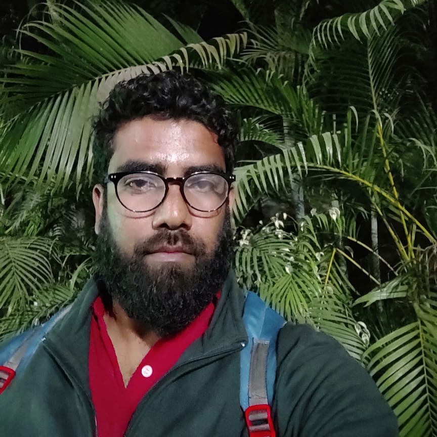

<!DOCTYPE html>
<html lang="en">
<head>
  <meta charset="UTF-8">
  <meta name="viewport" content="width=device-width, initial-scale=1.0">
  <title>Shubham Singh</title>
  <link rel="stylesheet" href="styles.css">
  <script src="script.js"></script>
</head>
<body>
    <nav class="navbar">
        <li onclick="toggleClass('home');addactive(0)">HOME</li>
        <li onclick="toggleClass('courses');addactive(1)">COURSES</li>
        <li onclick="toggleClass('awards');addactive(2)">AWARDS</li>
        <li onclick="toggleClass('publications');addactive(3)">PUBLICATIONS</li>
        <!-- <li onclick="toggleClass('sketching');addactive(4)">SKETCHING</li> -->
    </nav>
    <div class="side">
        <div class="side-content">
          
          <div id="profile-name">Dr. MD SHAH FAHAD</div>
          <div id="short-descp">
            Assistant Professor<br/>
            Department of Computer Science and Engineering<br/>
            Birla Institute of Technology Mesra, Ranchi, India<br/>
          </div>
          <div id="contact">
            <li><a href="mailto: fahad8siddiqui@gmail.com" target="_blank" ></a></li>
            <li><a href="" target="_blank"></a></li>
            <li><a href="" target="_blank"></a></li>
            <li><a href="" target="_blank"></a></li>
          </div>
        </div>
    </div>
    <div class="main">
      <div class="visible" id="home">
        <div>About Me<br/><br/></div>
        <h3>Research Areas<br/><br/></h3>
        <ul>
            <li>Speech and Digital Signal Processing<br/></li>
            <li>Machine Learning<br/></li>
            <li>Deep Learning<br/></li>
            <li>Emotion Recognition and Synthesis<br/></li>
            <li>Computational Biology and Disease prediction using Signals<br/></li>
            <li>Keyword Spotting<br/></li>
            <li>Speech Recognition<br/><br/></li>
        </ul>
        <h3>Research Proposal<br/><br/></h3>
        <ul>
            <li> Mapping of Stammering Hindi Voice into Normal Voice using Deep Learning techniques<br/><br/></li>
        </ul>
        <h3>Professional Experience<br/><br/></h3>
        <table>
          <tr>
              <td>Nov 2021 to Sep 2022- Assistant Professor (Grade-I), Department of SCSE, AI Division VIT 
                  Bhopal<br/></td>
          </tr>
          <tr>
              <td>Oct 2022 to March 2023- Assistant Professor (Grade-II), Department of CSE, KIIT
                  University, Bhubaneswar<br/></td>
          </tr>
    </table>
      </div>
      <div class="hidden" id="courses">
        <h3>Courses Taught:<br/><br/> </h3>
        <h4>(VIT Bhopal University)<br/><br/></h4>
        <ul>
            <li>Deep Learning(CSA4004)<br/></li>
            <li>Advance Python Programming(MCA2022)<br/></li>
            <li>Theory of Computation and Compiler Design (CSE2004)<br/></li>
            <li>Natural Language Processing (CSA4006)<br/></li>
            <li>Computer Architecture and Organization (CSE2003)<br/><br/></li>
        </ul>
        <h4>(KIIT University)<br/><br/></h4>
        <ul>
            <li>Theory of Computation(CS2010)<br/></li>
            <li>Operating System(CS2002)<br/><br/></li>
        </ul>
        <h4>(BIT Mesra)<br/><br/></h4>
        <ul>
            <li>Programming for Problem-Solving(CS101)<br/><br/></li>
        </ul>
      </div>
      <div class="hidden" id="awards">
        <h3>Awards & Honours<br/><br/></h3>
        <ul>
          <li>Qualified University Grant Commission – National Eligibility Test (UGC-NET), December, 
                  2018<br/></li>
          <li>Qualified Agriculture Scientist Research Board– National Eligibility Test (ASRB-NET), 
                  June, 2018<br/></li>
          <li>Qualified Graduate Aptitude Test in Engineering (GATE) examination three times: GATE-2014, GATE-2017and GATE-2019.</li>
          <li>MHRD stipend (GATE) for the M. Tech<br/></li>
          <li>MHRD stipend for the Ph.D<br/></li>
          <li>Gold Medalist in M. Tech.<br/></li>
          <li>Best Paper Award in 4th International Conference on Machine Intelligence and Signal Processing 
                  (MISP 2022).<br/></li>
        </ul>
      </div>
      <div class="hidden" id="publications">
        <h3> Publications :<br/><br/></h3>
        <h4>Journal Publications :<br/><br/> </h4>
        <ul>
            <li><strong>Md Shah Fahad</strong>, Akshay Deepak, Gayadhar Pradhan, and Jainath Yadav. “DNN-HMMBased Speaker-Adaptive Emotion Recognition Using MFCC and Epoch-Based Features”.
                Circuits, Systems, and Signal Processing 40 (2020): 466-489. (Indexing-SCIE, Impact factor2.225)<br/><br/>
            </li>
            <li>
                <strong>Md Shah Fahad</strong>, Ashish Ranjan, Jainath Yadav, and Akshay Deepak. “A survey of speech 
                emotion recognition in natural environment”. Digital Signal Processing,110(2020): 102951.
                (Indexing-SCI, Impact factor-3.38)<br/><br/>
            </li>
            <li>
                <strong>Md Shah Fahad</strong>, Shreya Singh, Abhinav, Ashish Ranjan and Akshay Deepak." Emotion 
                Recognition from Spontaneous Speech using Emotional Vowel-like Regions”. Multimedia tools 
                and Applications. 81(10), 14025-14043. (Indexing-SCIE, Impact factor-2.75)<br/><br/>
            </li>
            <li><strong>Md Shah Fahad</strong>, Ashish Ranjan, Gayadhar Pradhan and Akshay Deepak. “Speaker 
                Adversarial Neural Network (SANN) for Speaker-Independent Speech Emotion Recognition”.
                Circuits, Systems, and Signal Processing, 41 (2022), 6113-6135. (Indexing-SCIE, Impact 
                factor-2.225)<br/><br/>
            </li>
            <li> <strong>Md Shah Fahad</strong>, Shruti Gupta, Abhinav, Shreya Singh, and Akshay Deepak. “Synthesis of 
                Emotional Speech by Prosody Modification of Vowel Segments of Neutral Speech”. Recent 
                Advances in Computer Science and Communications.14(2020): 1226-1235 (Indexing-SCOPUS)<br/><br/>
            </li>
            <li>Jainath Yadav, <strong>Md Shah Fahad</strong>, and K. Sreenivasa Rao. “Epoch detection from emotional 
                speech signal using zero time windowing”. Speech Communication 96 (2018): 142-149.
                (Indexing-SCIE, Impact factor-2.01)<br/><br/>
            </li>
            <li>Ashish Ranjan, <strong>Md Shah Fahad</strong>, David Fernandez-Baca, Akshay Deepak, and Sudhakar 
                Tripathi. “Deep Robust Framework for Protein Function Prediction using Variable-Length 
                Protein Sequences”. IEEE/ACM Transactions on Computational Biology and 
                Bioinformatics,17(2019):1648-1659. (Indexing-SCIE, Impact factor-3.71)<br/><br/>
            </li>
            <li>Shruti Gupta, <strong>Md Shah Fahad</strong>, and Akshay Deepak. “Pitch-synchronous single frequency 
                filtering spectrogram for speech emotion recognition”. Multimedia Tools and Applications,
                79(2020): 23347-23365.(Indexing-SCIE, Impact factor-2.75)<br/><br/>
            </li>
            <li>Ashish Ranjan, <strong>Md Shah Fahad</strong>, David Fernandez-Baca, Akshay Deepak, and Sudhakar 
                Tripathi. “Towards an Efficient Modeling of Protein Sequences via Multi Context-Window Based 
                Scaled Self-Attention” IEEE/ACM Transactions on Computational Biology and Bioinformatics. 
                doi: 10.1109/TCBB.2022.3173789. (Indexing-SCIE, Impact factor-3.71)<br/><br/>
            </li>
            <li>Ashish Ranjan, <strong>Md Shah Fahad</strong> and Akshay Deepak. “λ-Scaled-Attention: A Novel Fast 
                Attention Mechanism for Efficient Modeling of Protein Sequences”. Information Sciences. 609 
                (2022):1098-1112 (Indexing-SCIE, Impact factor-8.23)<br/><br/>
            </li>
            <li>Paritosh Bhushan, <strong>Md Shah Fahad</strong>, Sanjay Agarwal, Akshay Deepak. “A self-attention-based hybrid CNN-LSTM for Speaker-Independent Speech Emotion Recognition. Accepted 
                (SCOPUS)<br/><br/>
            </li>
            <li>Paritosh Bhushan, <strong>Md Shah Fahad</strong>, Kota Sai Durga Kames, Paritosh Tripathi, Praveen 
                Mishara, Vineet Kumar Singh, Akshay Deepak. “A self-attention-based hybrid CNN-LSTM 
                Architecture for Respiratory Sound Classification. Accepted (SCOPUS)<br/><br/>
            </li>
        </ul>
        <h4>Submitted to Journal :<br/><br/></h4>
        <ul>
            <li><strong>Md Shah Fahad</strong>, Khusi Verma, Ashish Ranjan, Akshay Deepak. “Patient independent
                FoG detection for Parkinson’s disease patients using deep adversarial network” Biomedical 
                Signal Processing and Control. (Indexing-SCIE, Impact factor-3.88)<br/><br/>
            </li>
            <li>Ashish Ranjan, Vikash Kumar,<strong> Md Shah Fahad</strong>, Gautam Kumar, Akshay Deepak, and 
                Sudhakar Tripathi. “ A Survey on Sequential Data-Driven Approaches for Protein Function 
                Prediction”. IEEE/ACM Transactions on Computational Biology and Bioinformatics. 
                (Indexing-SCIE, Impact factor-3.71)<br/><br/>
            </li>
            <li>Shah Faisal, Aimin Shi, <strong>Md. Shah Fahad</strong>, *QiangWang, Simeng Zhao, Liu Hongzhi, 
                Soheila J. Maleki, Jon Ashley. Novel Machine Learning coupled with NIR & chemo-metrics 
                based prediction of peanut allergens quantity, and Allergenic Fingerprint of different peanut 
                cultivars from China (Draft prepared for submission in Food Chemistry) (Indexing-SCIE, 
                Impact factor-7.51)<br/><br/>
            </li>
            <li>Ashish Ranjan, <strong>Md Shah Fahad</strong>, and Vikash Kumar, Akshay Deepak “Deep learning 
                ensemble for subsequence-based Nucleic-acid-binding protein classification”. Computational 
                Biology and Chemistry (Indexing-SCIE, Impact factor-3.73)<br/><br/>
            </li>
        </ul>
        <h4>Conference Publications:<br/><br/></h4>
        <ul>
            <li><strong>Md Shah Fahad </strong>and Akshay Deepak. “Crowd Estimation of Real-Life Images with 
                Different View-Points." In International Conference on Innovative Computing and 
                Communications, pp. 1053-1062. Springer, 2021<br/><br/>
            </li>
            <li>Manish Kumar Rai, <strong>Md Shah Fahad,</strong> Jainath Yadav, and K. Sreenivasa Rao. “Language 
                identification using PLDA based on i-vector in noisy environment”. In 2016 International 
                Conference on Advances in Computing, Communications and Informatics (ICACCI), pp. 1014-
                1020. IEEE, 2016<br/><br/>
            </li>
            <li>Abhishek Srivastava, Balanand Jha, <strong>Md Shah Fahad,</strong> Akshay Deepak, and Kumar 
                Abhishek. “A Genetic Algorithm Formulation for Rogue Taxa Problem”. In 2018 International 
                Conference on Bioinformatics and Systems Biology (BSB), pp. 161-164. IEEE, 2018<br/><br/>
            </li>
            <li><strong>Md Shah Fahad,</strong> Raushan Raj, Ashish Ranjan and Akshay Deepak. “Hindi Songs genre 
                classification using Deep Learning”.In International Conference on Security, Privacy and Data 
                Analytics(ISPDA-2021). Springer, Singapore, 2022. 143-154.<br/><br/>
            </li>
            <li><strong>Md Shah Fahad,</strong> Aparna, Shambhavi, Ashish Ranjan and Akshay Deepak. “Multi-model 
                Emotion Recognition using Hybrid framework of Deep and Machine learning”. In International 
                Conference on Security, Privacy and Data Analytics(ISPDA-2021). Springer, Singapore, 2022. 
                155-166.<br/><br/>
            </li>
            <li>Vikash Kumar, Ashish Ranjan,<strong> Md Shah Fahad </strong>and Akshay Deepak. “Media House Bias 
                Prediction Using Deep Learning Framework”. In International Conference on Security, Privacy 
                and Data Analytics(ISPDA-2021), Springer, Singapore, 2022. 131-141.<br/><br/>
            </li>
            <li><strong>Md Shah Fahad,</strong> Raushan Raj, Ashish Ranjan and Akshay Deepak. “Discriminative Feature 
                Construction using Multi-labeling Approach for Automatic Speech Emotion Recognition”. 4
                th
                International Conference on Machine Intelligence and Signal Processing (MISP 2022).(Best 
                Paper Award)<br/><br/>
            </li>
        </ul>
      </div>
      <!-- <div class="hidden" id="sketching">sketching content</div> -->
    </div>
</body>
</html>